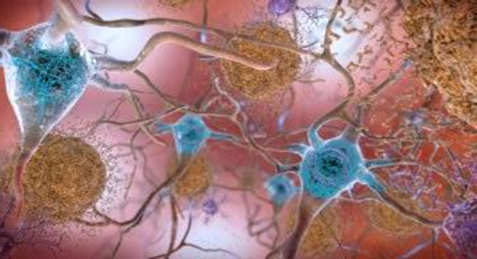

아동 학대의 유형에는 신체적 학대, 정서적 학대, 성 학대, 방임 및 유기로 구분한다(아동복지법 제3조 제7항). 실제 아동학대는 대부분 한 부류의 유형이 아닌 신체적 학대와 성적학대, 정서적 학대와 방임 등 혼합적인 형태로 발생된다.

1) 신체적 학대
신체적 학대(Physical Abuse)는 아동에게 우발적인 사고가 아닌 상황에서 보호자 및 성인이 신체적 손상을 입히거나 또는 신체손상을 입힌 모든 행위를 말한다. 신체적 학대는 발견하기도 쉽기 때문에 TV 뉴스에서 가장 많이 다뤄진다.
보호자나 양육자는 아동을 다치게 할 목적은 아니라고 하지만 과도한 징계나 체벌의 결과로 발생한다. 신체 손상에는 구타나 폭력, 화상을 입힘, 신체부위 묶음, 골절, 장기파열 등이 있으며, 물건을 던지기, 떠밀고 움켜잡기, 뺨 때리기, 물건을 사용하여 때리거나 위협하기, 발로 차거나 물어 뜯기, 주먹으로 때리기, 두들겨 패기, 칼, 도끼, 망치 등의 무기로 위협을 하거나 저해하는 행위 등이다. 이러한 행동은 아동에게 해를 주려고 의도하지는 않았지만 아동 개인이 받는 상처와 해는 극단적인 체벌에서 비롯된다.
2) 정서적 학대
정서적 학대(Emotional abuse)는 보호자 및 성인이 아동을 대할 때 부정적인 언어의 모욕, 정서적 위협, 감금이나 억제, 기타 가학적인 행위이다. 아동의 인격이나 감정, 기분을 심하게 무시하고 모욕, 잠을 재우지 않기, 형제나 친구 등과 비교, 차별, 편애, 아동을 시설 등에 버리겠다고 위협, 원망적, 거부적, 적대적 또는 경멸적인 언어 폭력 등이 포함된다. 정서적 학대는 눈에 보이지 않고, 신체적 학대처럼 당장 그 결과가 나타나지 않기 때문에 지나칠 수 있다는 점에서 문제가 더욱 심각하다.
3) 성적 학대
성적 학대(Sexual abuse)는 아동에게 보호자 및 성인이 자신의 충족을 위해 행하는 모든 성적 행위를 말한다. 자신의 성적 만족을 위해 아동을 관찰하거나 아동에게 성적으로 추행, 성교, 근친상간, 동성애, 노출증, 성매매를 통한 상업적 착취하거나 음란영상매체 생산하는 행위이다. 성적 학대의 문제점은 성에 대한 언급을 금기하는 사회 분위기와 피해아동과 가족이 문제를 숨기려고 하는 경향 때문에 조기에 발견과 해결이 되지 않는다.
4) 방임 및 유기
방임(Neglect)은 아동학대의 가장 일반적인 행태이다. 보호자가 아동에게 고의적, 반복적인 아동양육과 보호를 소홀히 함으로써 기본적 욕구를 충족시켜 주지 않은 것이다. 유기(abandonment)란 보호자가 아동을 보호하지 않고 버리는 행위를 말한다. 방임은 아동이 발육 부진이 되거나 치명적인 결과(장애) 및 사망에 이르게 하는 물리적 방임, 교육적 방임, 의료적 방임이 있다.
① 물리적 방임
･ 기본적인 의식주를 제공하지 않은 행위
･ 불길한 환경이나 위험한 상태에 아동을 방치하는 행위
･ 출생신고를 하지 않는 행위, 보호자가 아동을 가정 내에 두고 가출한 행위
･ 보호자가 아동을 시설 근처에 두고 사라진 행위
･ 보호자가 친족에게 연락하지 않고 무작정 친족 집 근처에 두고 사라진 행위
② 교육적 방임
･ 보호자가 아동을 특별한 사유없이 학교(의무교육)에 보내지 않는 행위
･ 아동의 무단결석을 방치하는 행위
③ 의료적 방임
･ 아동에게 필요한 의료적 처치 및 개입을 하지 않는 행위
④ 유기
･ 아동을 보호하지 않고 버리는 행위
･ 아동을 병원에 입원시키고 사라진 행위
･ 시설 근처에 아동을 버리고 가는 행위
2021.12.01 - [분류 전체보기] - 정신분석 상담의 주요 기법-자유연상, 전이, 저항, 안아주기, 해석
정신분석 상담의 주요 기법-자유연상, 전이, 저항, 안아주기, 해석
정신분석이론에 의한 상담은 아동의 무의식에 묻혀있는 심리적 상처나 욕망, 갈등에 접근하여 자아(ego)가 새롭게 통찰력을 형성하기 위한 방법을 사용한다. 주로 사용하는 상담 기법으로 자유
think-sis.tistory.com
출처: 박순길 외 공저(2021). 아동상담 2장. 아동발달과 환경 중에서